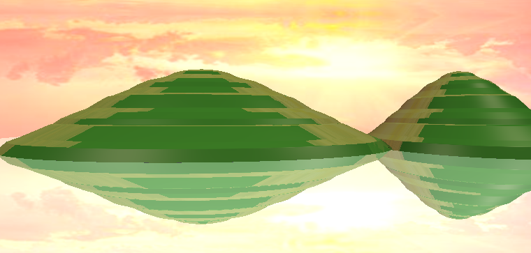

Welcome to my graphcis space; I will use this page to keep track work related to computer graphcis that I have done via the form of artfacts./n
I create a space for users to relax/practice mindfulness. This stress reliever is consistent with 3 parts, an open space with grabbable and cloneable shapes for you to create and build whatever you want, a hitting-the-ball game for you to exercise and practice focusing, and a yoga mat for you to meditate or take a break in darkness with calm music.
This demostrated VR pen I created, and the user experience is also enriched where I took the advantage of the shape of controller and used the end side as a pen for more intuitive drawing.
The above 2 light projects will be combined into a VR workspace project that has been currenty worked on. Stay tuned😊This animation's character is created with the Surface of Revolution and UV mapping I implemented. The smooth animation is controled with proper curves I implemented. Lighting is mainly controled by Blinn-Phong Point Light Shader I implemented.
This is a movable hierarchical model I created with the Surface of Revolution I implemented with Cartoon shader I implented.
This is an artifact I created with the ray tracing I implemented.
This project simulates red-green color blindness (Protanopia & Deuteranopia) by converting an image from RGB channel into the LMS model and applying proper matrix multiplication operations to LMS cones, and then converting the adjusted information back to RGB channel, and LMS Daltonization that adjusts the information lost in simulations and color enhancement techniques like histogram equalization are implemented to improve the original image and color correction. The simulator and color modification is also extended to videos and real-time webcam beyond static images.